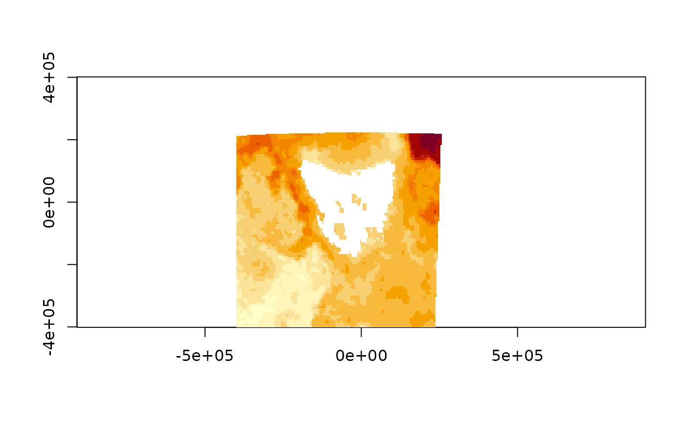

Read a window of data from a GDAL raster source through a warp specification. The warp specification is provided by 'extent', 'dimension', and 'projection' properties of the transformed output.
Usage
vapour_warp_raster(
x,
bands = NULL,
extent = NULL,
dimension = NULL,
projection = "",
set_na = TRUE,
source_projection = NULL,
source_extent = 0,
resample = "near",
silent = TRUE,
...,
band_output_type = "",
warp_options = "",
transformation_options = "",
open_options = "",
options = "",
nomd = FALSE,
overview = -1L,
nara = FALSE,
unscale = TRUE
)Arguments
- x
vector of data source names (file name or URL or database connection string)
- bands
index of band/s to read (1-based), may be repeated or in any order, or
NULLfor all bands (the default)- extent
extent of the target warped raster 'c(xmin, xmax, ymin, ymax)'
- dimension
dimensions in pixels of the warped raster (x, y)
- projection
projection of warped raster (in Well-Known-Text, or any projection string accepted by GDAL)
- set_na
NOT IMPLEMENTED logical, should 'NODATA' values be set to
NA- source_projection
optional, override or augment the projection of the source (in Well-Known-Text, or any projection string accepted by GDAL)
- source_extent
extent of the source raster, used to override/augment incorrect source metadata
- resample
resampling method used (see details in vapour_read_raster)
- silent
TRUEby default, set toFALSEto report messages- ...
unused
- band_output_type
numeric type of band to apply (else the native type if ”) can be one of 'Byte', 'Int32', or 'Float64' but see details in
vapour_read_raster()- warp_options
character vector of options, as in gdalwarp -wo - see Details
- transformation_options
character vector of options, as in gdalwarp -to see Details
- open_options
character vector of options, as in gdalwarp -oo - see Details
- options
character vectors of options as per the gdalwarp command line
- nomd
if
TRUEthe Metadata tag is removed from the resulting VRT (it can be quite substantial)- overview
pick an integer overview from the source (0L is highest resolution, default -1L does nothing)
- nara
if 'TRUE' return in nativeRaster format
- unscale
default is
TRUEso values are converted by the band's scale and offset to floating point, set toFALSEto get the stored values. An integerband_output_typealso gives the stored values
Details
Any bands may be read, including repeats.
This function is not memory safe, the source is left on disk but the output
raster is all computed in memory so please be careful with very large values
for 'dimension'. 1000 * 1000 * 8 for 1000 columns, 1000 rows and floating
point double type will be 8Mb.
There's control over the output type, and is auto-detected from the source (raw/Byte, integer/Int32, numeric/Float64) or can be set with 'band_output_type'.
'projection' refers to any projection string for a CRS understood by GDAL.
This includes the full Well-Known-Text specification of a coordinate
reference system, PROJ strings, "AUTH:CODE" types, and others. See
vapour_srs_wkt() for conversion from PROJ.4 string to WKT, and
vapour_raster_info() and vapour_layer_info() for various formats
available from a data source. Any string accepted by GDAL may be used for
'projection' or 'source_projection', including EPSG strings, PROJ4 strings,
and file names. Note that this argument was named 'wkt' up until version
0.8.0.
'extent' is the four-figure xmin,xmax,ymin,ymax outer corners of corner pixels
'dimension' is the pixel dimensions of the output, x (ncol) then y (nrow).
Options for missing data are not yet handled, just returned as-is. Note that there may be regions of "zero data" in a warped output, separate from propagated missing "NODATA" values in the source.
Argument 'source_projection' may be used to assign the projection of the
source, 'source_extent' to assign the extent of the source. Sometimes both
are required. Note, this is now better done by creating 'VRT', see vapour_vrt()
for assigning the source projection, extent, and some other options.
If multiple sources are specified via 'x' and either 'source_projection' or 'source_extent' are provided, these are applied to every source even if they have valid values already. If this is not sensible please use VRT to wrap the multiple sources first.
Wild combinations of 'source_extent' and/or 'extent' may be used for arbitrary flip orientations, scale and offset. For expert usage only. Old versions allowed transform input for target and source but this is now disabled (maybe we'll write a new wrapper for that).
Options
The various options are convenience arguments for warp options (-wo),
transformation options (-to), and open options (-oo), as well as options
for any other arguments to gdalwarp. There are no creation options (-co) or
dataset output options (-doo), because these are not supported by the MEM driver.
All warp_options are paired with a -wo declaration, and similarly for -to
and -oo; this is purely a convenience, since options itself can be used for
these as well, but we recommend using the individual arguments.
An example for warp options is warp_options = c("SAMPLE_GRID=YES", "SAMPLE_STEPS=30")
and one for general arguments might be
options = c("-ovr", "AUTO", "-nomd", "-cutline", "/path/to/cut.gpkg", "-crop_to_cutline").
If they would be separated by spaces on the command line then include as separate
elements in the options character vector.
See GDALWarpOptions for '-wo'.
See GDAL transformation options for '-to'.
See GDALWARP command line app for further details.
Note we already apply the following gdalwarp arguments based on input R arguments to this function.
- -of
MEM is hardcoded, but may be extended in future
- -t_srs
set via 'projection'
- -s_srs
set via 'source_projection'
- -te
set via 'extent'
- -ts
set via 'dimension'
- -r
set via 'resample'
- -ot
set via 'band_output_type'
- -te_srs
not supported
- -a_ullr
(not a gdalwarp argument, but we do analog) set via 'source_extent' use
vapour_vrt()instead
In future all 'source_*' arguments may be deprecated in favour of augmentation by 'vapour_vrt()'.
Common inputs for projection are WKT variants, 'AUTH:CODE's e.g.
'EPSG:3031', the 'OGC:CRS84' for lon,lat WGS84, 'ESRI:code' and other
authority variants, and datum names such as 'WGS84','NAD27' recognized by
PROJ itself.
See help for 'SetFromUserInput' in 'OGRSpatialReference', and 'proj_create_crs_to_crs'.
See also
vapour_read_raster vapour_read_raster_raw vapour_read_raster_int vapour_read_raster_dbl vapour_read_raster_chr vapour_read_raster_hex
Examples
b <- 4e5
f <- system.file("extdata", "sst.tif", package = "vapour")
prj <- "+proj=aeqd +lon_0=147 +lat_0=-42"
vals <- vapour_warp_raster(f, extent = c(-b, b, -b, b),
dimension = c(186, 298),
bands = 1,
projection = vapour_srs_wkt(prj),
warp_options = c("SAMPLE_GRID=YES"))
image(list(x = seq(-b, b, length.out = 187), y = seq(-b, b, length.out = 298),
z = matrix(unlist(vals, use.names = FALSE), 186)[,298:1]), asp = 1)
